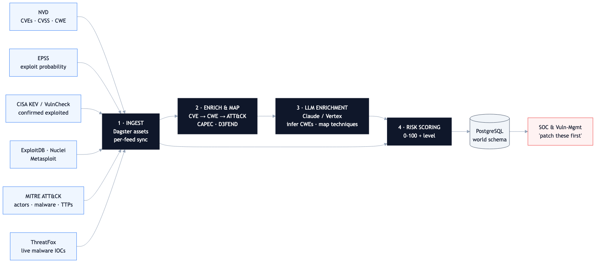
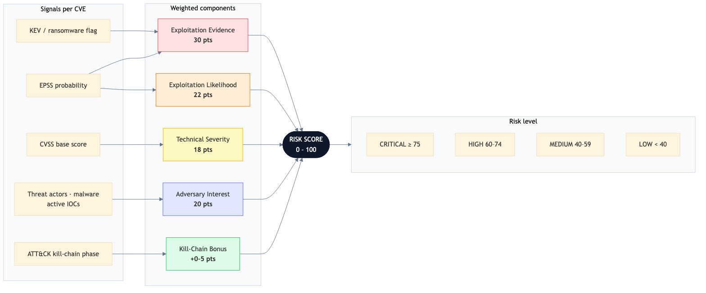
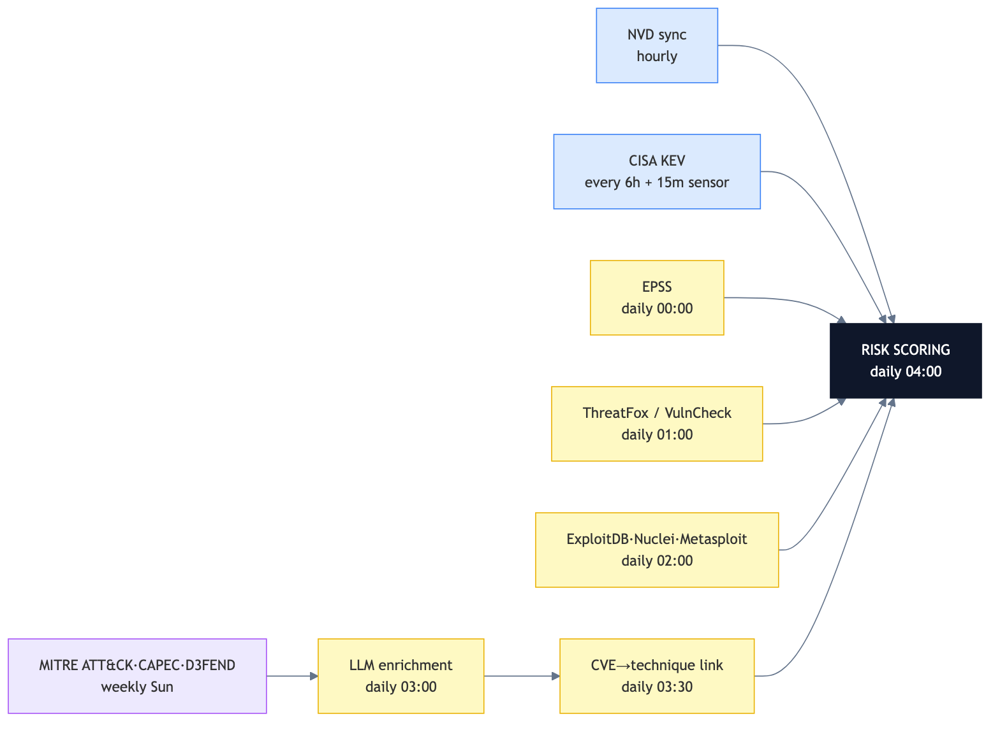
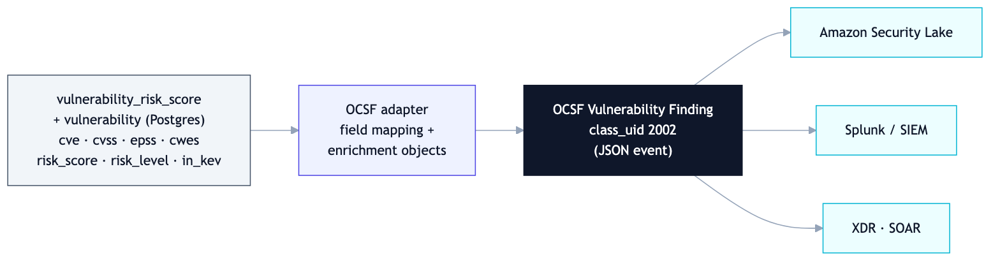

Scoring Every Known Vulnerability: A Threat-Intelligence Data Pipeline That Tells You What to Patch First
How I built a Dagster pipeline that fuses 12+ threat feeds into a single 0–100 risk score for ~270,000 CVEs — so security teams stop guessing and start prioritizing.
TL;DR - Problem: ~270k known CVEs, ~25k new per year. CVSS severity alone tells you how bad a vuln is in theory, not whether anyone is actually exploiting it. Teams drown in "critical" alerts. - Solution: A data pipeline that ingests 12+ authoritative threat feeds, links each CVE to the attacker techniques and threat actors that use it, and computes one evidence-backed risk score (0–100). - Stack: Python 3.12 · Dagster · PostgreSQL 16 (async SQLAlchemy) · Claude Sonnet 4.6 (Vertex AI) · Prometheus · Docker/gRPC. - Outcome: A daily-refreshed, queryable risk table that answers "which of my open CVEs should I patch this week?" with a defensible, transparent score.
By the numbers
The problem: severity is not risk
Every vulnerability management team faces the same flood. The National Vulnerability Database publishes tens of thousands of CVEs a year, most stamped "HIGH" or "CRITICAL" by CVSS. But CVSS measures theoretical severity — it can't tell you that only ~5% of CVEs are ever exploited in the wild, or that a "medium" bug is currently being weaponized by a ransomware crew.
The signal that matters — is this being exploited, by whom, and how easily? — is scattered across a dozen disconnected sources: NVD, EPSS, CISA's KEV catalog, MITRE ATT&CK, ExploitDB, Metasploit, ThreatFox, and more. No single feed gives you the whole picture.
This pipeline's job: collapse all of that into one number a human can act on.
Architecture

The pipeline is a Dagster asset graph organized into four stages — Ingest → Enrich → LLM-augment → Score — landing in a PostgreSQL world schema that downstream SOC and vuln-management tools query directly.
Stage 1 — Ingest: 12+ authoritative feeds
Each source is a Dagster asset with its own sync cadence, retry policy, and Prometheus metrics:
| Feed | What it contributes | Refresh |
|---|---|---|
| NVD | CVE metadata, CVSS (v2/3.1/4.0), CWE, affected products | hourly, incremental |
| CISA KEV | Confirmed exploited-in-the-wild catalog | 6h + a 15-min change sensor |
| EPSS | Daily exploit-probability score (0–1) per CVE | daily |
| MITRE ATT&CK | Techniques, threat actors, malware, campaigns | weekly |
| CAPEC / D3FEND | CWE→technique mappings, defensive mappings | weekly |
| ExploitDB · Nuclei · Metasploit | Public exploit / scanner / weaponized-module availability | daily |
| ThreatFox | Live malware IOCs from active campaigns | daily |
| VulnCheck | Commercial exploitation reports | daily |
The NVD asset streams 2,000 CVEs per page and syncs incrementally by lastModDate; a sensor watches the KEV feed every 15 minutes and fires a refresh the moment CISA publishes a new exploited vuln.
Stage 2 — Enrich: turning a CVE into an attack story
A raw CVE is just an ID and a severity. The enrichment stage answers "what can an attacker actually do with this?" by walking a graph:
CVE → CWE (weakness) → ATT&CK technique → threat actor / malware.
CAPEC provides the CWE→technique edges; the pipeline computes the transitive closure to link each vulnerability to the concrete adversary techniques it enables, and D3FEND attaches the defensive countermeasures.
Stage 3 — LLM enrichment: filling the gaps
Real-world data is incomplete — many CVEs ship with no CWE, and many CWEs have no CAPEC mapping. Two targeted Claude Sonnet 4.6 (via Vertex AI) tasks close those gaps:
- Infer missing CWEs from the CVE's free-text description (batched 20 CVEs/call).
- Map orphan CWEs to ATT&CK techniques (batched 10/call), with the model's one-sentence rationale stored alongside a confidence score.
The system prompt (the CWE reference list) is cached with cache_control: ephemeral, and calls run with bounded concurrency and exponential backoff. The LLM is used surgically — only where deterministic sources fall short — which keeps cost and hallucination risk low. Every LLM-derived edge is tagged with source = 'llm' so it's auditable and separable from authoritative mappings.
Stage 4 — The scoring engine
This is the heart of the system: a transparent, weighted model that converts all those signals into a single 0–100 score.

Risk Score (0–100) =
Exploitation Evidence (30 pts) — KEV, ransomware, exploit maturity
+ Exploitation Likelihood (22 pts) — EPSS + a KEV floor
+ Technical Severity (18 pts) — CVSS, linearly scaled
+ Adversary Interest (20 pts) — # threat actors / malware / live IOCs (log-scaled)
+ Kill-Chain Bonus (0–5 pts) — extra weight for initial-access techniques
A few design choices I'm proud of:
- Evidence beats theory. A CVE in CISA KEV with known ransomware use scores the full 30 evidence points; a mere proof-of-concept scores 10. The model rewards confirmed exploitation over hypothetical severity.
- EPSS as a forward signal. Vulnerabilities with EPSS ≥ 0.9 get inferred exploitation credit even before they hit KEV — roughly 60% of them eventually do.
- Adversary interest is log-scaled. The jump from 0→1 threat actor matters far more than 40→60, so counts are compressed with
log₂to avoid letting a handful of over-reported CVEs dominate. - Kill-chain awareness. An initial-access technique earns a +5 bonus — because a vuln an attacker can use to get in the front door is categorically more dangerous than one that needs prior access.
The output buckets cleanly: CRITICAL ≥ 75 · HIGH 60–74 · MEDIUM 40–59 · LOW < 40 — and in practice nearly every CRITICAL-scored CVE is a confirmed KEV entry, which is exactly the validation you want.
Orchestration: a dependency-aware daily refresh

Fast-moving feeds (NVD hourly, KEV every 6h) run independently; slow reference data (ATT&CK, CAPEC, D3FEND) refreshes weekly. Everything funnels into a single nightly risk-scoring job at 04:00 that depends on all upstream assets — so the score always reflects the freshest available intelligence. The whole thing runs as a Dockerized gRPC code location with a separate Postgres for Dagster metadata and another for application data.
Data model
Scores land in world.vulnerability_risk_score (component sub-scores preserved for explainability), joined to a rich graph: vulnerability, cisa_kev, epss_history, exploit, the attack_* tables (techniques, actors, malware, campaigns), cwe_technique, and ioc. Floats are stored as scaled integers, lists as native Postgres arrays, and risk scoring reads from a read-only replica connection to isolate it from ingestion load.
Interoperability: speaking OCSF
A risk score is only useful if downstream security tooling can consume it. The serving layer maps each scored CVE to an OCSF Vulnerability Finding (class_uid 2002) — the Open Cybersecurity Schema Framework that underpins Amazon Security Lake, Splunk, and most modern security data lakes. Any OCSF-native SIEM, XDR, or data lake ingests the scored, enriched CVEs with no bespoke glue.

The mapping is direct, with the risk score and ATT&CK context carried as OCSF enrichments:
Internal field (vulnerability / vulnerability_risk_score) |
OCSF Vulnerability Finding |
|---|---|
cve |
vulnerabilities[].cve.uid |
cvss_score |
vulnerabilities[].cve.cvss[].base_score |
cwes[] |
vulnerabilities[].cve.cwe[].uid |
epss_score |
vulnerabilities[].cve.epss.score |
risk_score (0–100) |
finding_info + risk_score enrichment |
risk_level |
severity_id (Critical / High / Medium / Low) |
in_kev |
is_exploit_available + KEV enrichment |
affected_products[] |
resources[].affected_packages |
| linked ATT&CK techniques | enrichments[] (technique IDs) |
This is the difference between a scoring service and a scoring service that plugs into the security data fabric a team already runs.
What this project demonstrates
- Multi-source data integration — 12+ APIs/feeds with different formats (REST, CSV.gz, STIX JSON, XML), each with bespoke incremental-sync and retry logic.
- Pragmatic LLM use — Claude applied only where deterministic data runs out, with caching, batching, confidence scoring, and full auditability.
- A defensible domain model — the scoring weights encode real vulnerability-management expertise (KEV, EPSS, ATT&CK, kill-chain), not arbitrary numbers.
- Production data engineering — Dagster asset graph, sensors, retry policies, Prometheus metrics, read replicas, and a containerized deployment.
Tech stack: Python 3.12 · Dagster 1.13 · PostgreSQL 16 · SQLAlchemy 2.0 (async/asyncpg) · httpx · anthropic[vertex] · Alembic · Prometheus · Docker + gRPC code locations · uv.
← Back to portfolio · Download as PDF